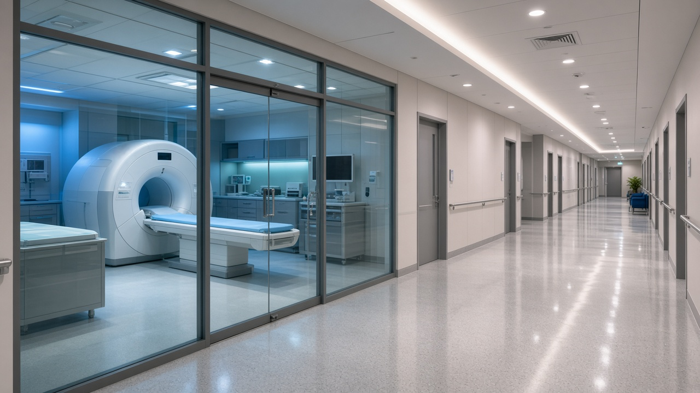

Multi-specialty day hospital · Bengaluru
AAROH is a fictional clinic group for this mockup: consultations, diagnostics, and day procedures under one roof, with a desk that answers before the patient walks in.
One front desk, six clinical lines. Patients should not have to learn the building to find the right room.
First consults, follow-ups, and referrals that stay inside the group.
Consults and screening with a separate waiting room.
Well-child visits and same-week sick slots.
Lab and imaging reported back to the consulting doctor the same day.
Short procedures with discharge before evening.
Programmes booked as a series, not a one-off visit.
The public site’s job is to get a patient to the right department with the right papers.
Department, preferred campus, and whether this is a first visit.
A coordinator replies with a time, a doctor, and what to bring.
Consult, tests, and the next appointment happen before you leave.
Indiranagar and Whitefield. This form is mockup-only — it does not send or reserve a slot.